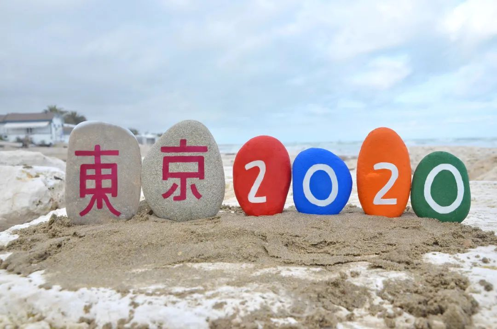

东京奥运会面临疫情困境：5月底或迎生死时限，延期易地办赛不现实
原文链接 备份链接 图片来源：视觉中国 记者：罗盈盈 “ 如果日本当地疫情在今年5月底无法得到有效控制，这届奥运会有可能会被取消。 ” 即使日本新冠肺炎疫情持续蔓延，当地官员、东京奥组委以及国际奥委会早前多次强调，东京奥运会准时举办。 但 …

国际奥委会关注的核心问题
首先是运动员的健康
其次是商业因素


央视客户端消息称，据《今日美国》报道，据资深国际奥委会委员迪克·庞德当地时间23日透露，2020年东京奥运会将推迟至2021年，而有关细节将在未来四周内制定。
报道称，庞德在电话采访中说：“根据国际奥委会提供的信息，已决定推迟东京奥运会。尚不确定推迟的具体计划，但东京奥运会将不会在7月24日开始，这就是我知道的”。
迪克·庞德数十年来一直是国际奥委会最具影响力的成员之一。他说，他相信国际奥委会将很快宣布其下一步行动。而在此前，加拿大与澳大利亚已经宣布将退出今年的东京奥运会，奥委会也在3月22日表示将在1个月内对目前的情况进行综合评定，其中推迟举办是备选方案之一。
此前，在国际奥委会表态可能将东京奥运会延期举办的时候，各国就已纷纷跟进。英国奥委会主席休·罗伯逊呼吁国际奥委会迅速做出决定。美国奥委会主席罗伯逊爵士称，“我们欢迎国际奥委会提出推迟奥运举办的备选方案，在目前的环境下，奥运会朝着如期举办的方向前进已经不合适。”
此前，一直对外宣称奥运会将如期举行的日本政府态度也做出改变。据共同社报道，日本政府相关人士透露，日本政府23日基本决定将于近期通知国际奥委会（IOC），若IOC作出东京奥运会和残奥会延期举行的决定，日方将予以同意。
国际奥委会执委会表示，如果奥运会不能如期举行，一些奥运会的关键场馆可能不再可用，已经预订的酒店房间非常难以处理，至少33个奥运项目的全球赛历需要调整。东京奥组委首席执行官武藤敏郎在接受NHK采访时说：“如果奥运会被推迟，很难断定未来会发生什么问题，我想我们会与国际奥委会尽快讨论这些问题。”
但这些具体问题或许只是诸多问题中最轻微的部分，更严重的影响是针对日本经济的打击。英国《金融时报》称，根据东京都地方政府对奥运会的经济效果初步估算，在2013年至2030年年间，东京奥运将带来32万亿日元的经济效益。其中21万亿日元来自奥运会举办之前完善各种基础设施，11万亿日元来自奥运会期间及之后的10年举办各种活动。
根据日本官方公布的数据，日本政府已经为奥运会投入126亿美元。如果东京奥运会被延迟，相关投入预计还将进一步增加。日本版《新闻周刊》的报道称，东京奥运会日本国内赞助商签约金额超过30亿美元，共涉及62家日企。英国《金融时报》称，根据估算，日本东京奥运会打破了企业赞助纪录。包括佳能、瑞穗金融及野村证券等在内的东京奥运会的15家“金牌”赞助商，每家都支付了1亿美元。美国国家广播公司已支付14.5亿美元的奥运会转播费。
《金融时报》援引花旗集团东京首席经济学家村岛纪一的话称，若取消东京奥运会，日本将失去前来观赛的200万入境游客，日本今年截至9月的季度GDP增长率将损失0.2%。东京都知事小池百合子23日表示，“奥运会有很多利益相关者，而东京是最重要的利益相关者。”
据北京体育大学中国体育政策研究院院长鲍明晓分析，国际奥委会提出考虑延期这一动议，背后应该是该组织执委会成员提出的，“一个执委会成员，代表某个国家或某个单项赛事的利益。比如某个执委，他所代表的国家疫情特别严重，他就可能提出延期的动议。或者某个执委代表的单项赛事，延期对他的赛事更有利，他也可能提出延期的动议。”鲍明晓对《中国新闻周刊》说。
此外，在鲍明晓看来，东京奥运会具体延期到什么时间，涉及复杂的利益考量。比如，如果只是延期到夏天之后，还在今年举办，会与很多国际单项组织的赛事冲突，导致很多职业运动员选择参加国际单项组织的赛事，而不去参加奥运会，从而会降低奥运会的观看性。“比如很多NBA球星，奥运要是不在夏天举办，就可能与NBA冲突，那么他不会去奥运会参赛。”他说。
据分析，如果奥运会延期一年，又会面临至少两方面的问题。一方面，这会将2024年奥运会举办地巴黎的奥运准备周期减少一年时间，从而影响巴黎和相关奥运赞助商的利益。另一方面，也会增加各国参加奥运会的成本，“按照欧洲的惯例，会给参加奥运的运动员财政补贴，如果延期一年，则补贴成本也随之上升。”鲍明晓说。
王奇是北京奥林匹克文化促进会副主席。他对《中国新闻周刊》分析称，“（东京奥运会）延期是肯定的了。国际奥委会关注的核心问题，首先是运动员的健康，其次是商业因素。现在欧美疫情太严重，哪怕是空场比赛，不设观众席，但运动员之间也可能传染。”
此外，王奇分析，虽然最终决定权在国际奥委会，但该组织一定会征求多方意见。“比如世界卫生组织的意见就很重要，因瘟疫影响到奥运举办，历史上还是第一次。此外，各大洲的奥林匹克理事会，也一定会征求各奥运成员国的意见，最终汇总到国际奥委会。”王奇对《中国新闻周刊》说。
人类历史上，奥运会有过三次停办，都是因为世界大战。第一次是1916年，原定在德国柏林举办第六届奥运会。这届奥运会开始前两年，萨拉热窝事件导致第一次世界大战爆发，随后德国、英国、法国、俄国相继投入战争。最终，1916年的奥运会被迫取消。
第二次是1940年的第12届奥运会。起初定在日本东京举行，但奥运会开始前两年，日本奥委会在军方压力下宣布，1940年日本要举行大规模的军事演习，无法举行奥运会。随后，国际奥委会决定将夏季奥运会会址改在赫尔辛基，之后却发生了苏联入侵芬兰的苏芬战争，1940年1月1日，芬兰通知国际奥委会放弃主办权。于是，这届奥运会停办。
第三次是1944年的第13届奥运会，原定在英国伦敦举行。但这一年，第二次世界大战尚未停歇，只好停办，成为第二届停办于二战的奥运会。
历史上，奥运会未能如期举行的情况，只有上述三次停办的记录。如果东京奥运会确定延期，这将成为人类历史上首次因瘟疫蔓延而改期的奥运会。
值班编辑：俞杨
推荐阅读
▼


原文链接 备份链接 图片来源：视觉中国 记者：罗盈盈 “ 如果日本当地疫情在今年5月底无法得到有效控制，这届奥运会有可能会被取消。 ” 即使日本新冠肺炎疫情持续蔓延，当地官员、东京奥组委以及国际奥委会早前多次强调，东京奥运会准时举办。 但 …
原文链接 备份链接 【财新网】（驻东京记者 陈立雄）3月9日，受新冠疫情对全球市场信心带来的冲击，日经指数大跌1050.99点，跌幅达5.07%，收于19698.76点，达1年2个月以来的新低，还跌破了2万元的关卡。日经盘中最多一度下跌 …
原文链接 备份链接 因为新冠疫情带来的不确定性，让企业对于营销支出和赞助奥运持观望态度。这种不确定性已经从奥运经济主动脉向外扩散，今年东京奥运会可能因此承受罕见的商业压力 文 |《财经》记者 王晓枫 编辑 | 郝洲 日本东京正全力为举办 …
原文链接 备份链接 图片来源：视觉中国 记者：罗盈盈 “ 日本政府和东京奥组委依然致力于让奥运会如期举行。 ” 受全球疫情影响，东京奥运会能否如期举办的悬念仍在持续。 3月3日，据英国《每日邮报》报道，日本奥运大臣桥本圣子在回答一名议员关 …
原文链接 备份链接 据央视新闻，3日，就有关新冠肺炎疫情是否会导致今夏东京奥运会取消这一问题，日本奥运大臣桥本圣子公开表示，“协议要求奥运会在2020年内举行，这可以解释为允许推迟到年底举行。” 桥本圣子表示，根据相关协议，推迟或取消奥运 …